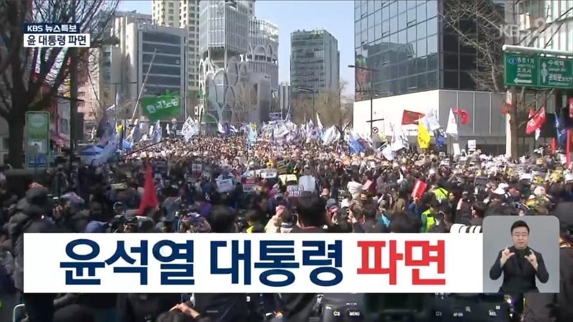

世界苦茶04月04日新闻 | 35条 | 尹锡悦弹劾案通过

尹锡悦弹劾案通过 | 惠誉下调中国主权信用评级 | 欧盟将对X实施重大处罚 | 特朗普关税引发美国暴跌 | 美国禁止驻华使馆人员与中方恋爱
透明茶室
苦茶数据
美元兑人民币：7.24（昨日7.31，前日7.27）
美元兑日元：145.45（昨日147.45，前日149.82）
上证指数：休市（昨日3342，前日3333）
标普500指数：5396（昨日5670，前日5633）
比特币：81790（昨日83604，前日84664）
布伦特原油：69.34（昨日73.28，前日74.50）
中国新闻
• 中国男子济州岛涉谍被捕 ：韩国军方说，一名中国男子涉嫌拉拢现役军人收集军事机密和非公开资料，企图窃取韩美联合军演相关情报，3月底在济州岛被逮捕。综合韩联社、《东亚日报》报道，韩国军方星期四透露，国军防谍司令部上星期六以违反《军事机密保护法》为由，在济州岛逮捕了一名中国男子。韩军调查发现，从去年年初开始，包括该男子在内的一伙中国人，潜入了聊天软件KakaoTalk上一个匿名公开聊天室，接近韩军现役士兵。这个聊天室以现役韩国官兵或军官申请者等为主要成员，主要用于交换军队生活等信息。
• 中方回应菲间谍案依法办 ：针对菲律宾间谍案，中国外交部称，中国司法机关和有关部门严格依法办案，也将保障有关人员的合法权益。中国国家安全部星期四通报，中国国安机关逮捕三名在华从事间谍活动的菲律宾籍人员。据通报，菲律宾籍在华人员大卫·斯皮内斯多次前往中国军事设施周边活动，形迹可疑。中国国安机关迅速组织侦查，发现大卫是在一名为“赫雷拉”的菲律宾“上线”远程指挥下，在中国境内开展间谍窃密活动。
• 中方驳斥美对港制裁报告 ：美国国务院星期一宣布制裁六名中国大陆和香港高级官员，并发布2025年香港政策法报告，中国外交部驻港公署特派员崔建春就此向美国驻香港总领事梅儒瑞提出严正交涉。据中国外交部驻港公署官网消息，崔建春星期三约见梅儒瑞，就美国国务院宣布对六名中方官员实施无理制裁并发布抹黑香港的2025年香港政策法报告提出严正交涉。崔建春也对美方粗暴干涉香港事务和中国内政表达强烈谴责和坚决反对，并正告美方切勿低估中方维护国家主权、安全、发展利益的坚定决心，中方对美方霸权霸道行径必将予以坚决有力反制。
• 泰国公主下周将访中国 ：泰国公主诗琳通将在下星期再次访问中国。中国外交部在官网宣布，应中国政府邀请，诗琳通将于星期一至星期天访问中国。诗琳通此次访华是在泰国首相佩通坦2月到访后进行。
• 元朗白衣人案裁定罪成 ：香港法院星期四裁定，2019年反修例抗争期间发生的元朗区白衣人袭击事件嫌犯王志荣，暴动及伤人罪名成立。综合《明报》和香港01报道，香港元朗区2019年7月21日晚间发生白衣人聚集并冲入元朗站月台袭击市民事件，事后先后有多名被指涉案的白衣人被控暴动及伤人罪。袭击事件发生前，时任立法会议员林卓廷也曾在该站逗留，他与数名市民曾在该站的入闸区一带与白衣人对骂。林卓廷等人也事后被控暴动，林卓廷等七人全部经审讯后被裁定暴动罪成。
• 国台办表示，台独必遭惩处 ：解放军“海峡雷霆-2025A”军演当天，中国大陆国台办主任宋涛在与国民党副主席夏立言会面时说，两岸是家人、不是敌人，但“台独”分子恶行必遭惩处。据新华社报道，宋涛星期三在江苏徐州会见夏立言一行。他在会见开场白先引述中国大陆国家主席习近平的话说：“两岸同胞都是中国人，没有什么心结不能化解，没有什么问题不能商量，没有什么势力能把我们分开”。宋涛也说，两岸同胞是家人、不是敌人，任何谋“独”挑衅必定失败，“台独”分子恶行必遭惩处。大陆将坚持一个中国原则和“九二共识”，与包括中国国民党在内的台湾各政党、团体和各界人士共同努力，坚决反对“台独”分裂和外来干涉，加强两岸交流合作，造福广大台湾同胞。
• 杭州高铁故障致列车晚点 ：4月3日18:11许，沪昆高铁杭州南站附近接触网突发故障，部分列车的晚点时间超30分钟。故障于19:15处置完毕，列车运行秩序逐步恢复。
• 美驻华馆禁员工与中方恋爱 ：美国驻华大使馆1月中旬下令，禁止职工与中国人恋爱或性爱。已发展关系者可以申请豁免，如果通不过就要分手。违禁者会被调离中国。禁令范围包括沈沪汉穗港五个领馆。之前的规定是和中国人亲密接触要向上级报备。2024年7月新增禁止职工与使领馆的中国籍雇员恋爱性爱。后又有国会议员找到时任大使伯恩斯，认为限制不够严格，遂出此令。
亚太印太新闻
• 台立委批赖对美动态无知 ：美国总统特朗普宣布对台湾加征32％关税，民众党立委黄珊珊批评赖清德政府对美国的动态无知。据中时电子报报道，民众党立委黄珊珊星期四说，特朗普所公布的“对等关税”给台湾32％的税率。这个数字与台湾央行、财政部先前所做的推估有差距。一方面显示行政单位对美方动态的无知，另一方面也显示美国商务部算法的不明。黄珊珊说，台湾被加征的关税比日韩都高，与新南向国家相比在伯仲之间。短期内，或许因与主要竞争对手大致相当而稍得喘息，但32％的税率绝对不是台湾可以长期支撑的。 （翻评：别说民进党了，连美国财长可能都没有预料到。）
• 缅甸灾区恐爆疾病威胁 ：全球救援机构星期四警告，缅甸极端高温和暴雨可能导致灾区暴发疾病，使救援工作变得更加困难。目前，这场大地震的死亡人数已超过3000人。上星期五的7.7级地震是缅甸一个世纪以来最强的地震之一，震感强烈，震区受灾人口多达2800万，医院等建筑物倒塌，社区夷为平地，许多人没有食物、水和住所。缅甸军政府表示，星期四死亡人数再增加至3085人，受伤人数4715人，至今仍有341人失踪。
• 韩国宪法法院8名法官4月4日一致裁决，总统尹锡悦弹劾案获得通过： 尹锡悦成为韩国宪政史上继朴槿惠之后第二位被罢免的总统。韩国须在60日内举行新一届大选。
科技新闻
• 亚马逊传竞标TikTok美国业务 ：中国短视频平台TikTok在美国“不卖就禁”限期将至，美国电商巨头亚马逊据报向白宫提交了一份竞标方案。彭博社星期四引述知情人士报道，亚马逊向负责推动TikTok美国业务出售的美国副总统万斯以及商务部长卢特尼克（Howard Lutnick）递交提案，但白宫并未认真考虑。亚马逊对此拒绝置评。
• 中企抢购英伟达AI芯片 ：知情人士称，包括字节跳动、阿里巴巴和腾讯控股在内的中国企业，在今年首季已下单至少160亿美元购买美国晶片巨头英伟达的H20晶片。路透社星期三引述美媒The Information报道上述消息。路透社今年2月首次报道，中国初创公司深度求索发布的高性价比AI模型爆火，并获得广泛使用后，H20晶片的需求量近几个月来激增。在美国出口管制下，该晶片是中国国内可合法获得的最先进人工智能处理器。
• 任天堂将于6月5日发布新款Switch 2游戏机： 任天堂将于6月5日发布其新款 Switch 2 游戏机，寻求通过2017年推出的畅销型号的新版本保持其在电子游戏设备领域领先地位。作为该公司八年来首款全新平台，Switch 2 有望在行业经历了低迷的三年后，为游戏开发商和零售商带来销售增长。新机搭载更大的7.9英寸 1080P LCD 显示屏，支持 120Hz 游玩和 HDR，内置存储容量提高到256GB。通过底座模式可以支持 4K 60 FPS 游戏画面输出。还推出了游戏共享功能，只需一份游戏即可在多台游戏机上实现本地多人联机，支持初代 Switch 和 Lite，目前提供5款游戏 。
• Neuralink 在全球招募脑植入研究参与者： 马斯克旗下脑机接口公司Neuralink，正在全球范围内寻找患者参与一项研究，这项研究涉及一种能够让人们通过思维控制计算机的设备。Neuralink 公司在社交媒体网站X上发帖表示，邀请无法使用手臂或腿部的四肢瘫痪者报名该公司的患者登记。Neuralink表示到目前为止已为三名患者植入了该设备。这是全球研发和测试实验性脑植入设备的几家公司之一。
• 欧盟拟对马斯克社媒平台X实施重大处罚： 据四位知情人士透露，欧盟监管机构正准备对埃隆·马斯克旗下社交媒体平台X实施重大处罚，原因是该平台违反了欧盟《数字服务法案》。知情人士表示，处罚措施将包括罚款和要求改变产品。处罚预计将在今年夏天公布。这将是根据DSA发布的首批处罚，一位消息人士说，罚款金额可能超过十亿美元，监管机构试图以 X 为例，阻止其他公司违反DSA。欧盟官员表示，他们对 X 的调查进展与特朗普关税无关，调查始于2023年。X 发文称，针对其的执法行动将是前所未有的政治审查行为和对言论自由的攻击。
财经新闻
• 特朗普提出减免中国关税换TikTok出售获批： 美国总统特朗普建议，如果北京允许TikTok的中国所有者字节跳动剥离这款广受欢迎的视频分享应用，以避免在美国被禁，他可能会削减对中国商品的关税。特朗普在空军一号上说：“我们在TikTok的问题上遇到了一种情况，中国可能会说我们会批准一项协议，但你们会在关税上采取行动吗？关税给了我们很大的谈判权力。”特朗普还表示，他的政府 “非常接近” 与 “多个投资者” 达成协议，这将允许TikTok继续在美国运营。“我们非常接近与一群非常优秀的人达成协议，”特朗普表示。周四早些时候，副总统万斯告诉福克斯新闻，该协议将在截止日期前公布。
• 美新关税分阶段实施 ：美国宣布，自4月5日起对所有国家征收10%的基准关税。自4月9日起对部分国家征收所谓“对等关税”，例如中国大陆34%、欧盟20%、日本24%、韩国 25%、台湾32%、印度26%。“对等关税”的计算基准是“消除逆差所需的关税税率”，数值取为该国2024年对美贸易顺差与对美出口总额的比值。特朗普将该数除以二，即为实施税率。
• 特朗普关税引发股市暴跌 ：美国总统特朗普宣布对所有进口产品征收10%的全面关税，并对个别的美国贸易伙伴征收比预期高的“对等关税”，导致美国华尔街股市主要股指期货在星期四全面暴跌。这次的关税宣布甚至被许多分析师在各个社交平台形容为“比华尔街担心的最坏情况还要糟糕”，而且增加爆发全球贸易战的风险，让本来已经陷入困境的美国经济带来重创。在11时25分截稿时，标准与普尔500指数期货猛挫232.40点或4.10％，报5438.50点；以科技股为主的纳斯达克100指数期货更是跌了919.80点或4.70％，报20618.00点；重量级的道琼斯指数期货也下滑了1419.90点，报40805.40点。
• 墨总统称关税豁免因关系佳 ：墨西哥总统辛鲍姆星期四对墨西哥被排除在美国总统特朗普最新一轮关税目标国家名单之外，表示欢迎。辛鲍姆对记者说，墨西哥之所以能避开最新关税措施，要归功于墨西哥政府与美国政府的“良好关系”。墨西哥被视为是最容易受到特朗普关税影响的经济体之一，因为墨西哥与美国有着密切的贸易关系，并且都是美墨加自由贸易协定的成员。
• 特朗普称美国经济将更强 ：美国总统特朗普承认星期四的关税举措给美国经济带来冲击，但他指出，尽管全球市场暴跌，美国经济将“变得更加强大”。特朗普在华尔街开盘前不到一小时，在他的社交媒体平台Truth Social上发文称：“手术结束了！病人活了下来，正在康复。预测是，病人将比以往任何时候都更加强大、更大、更好、更有弹性。”白宫新闻秘书莱维特也试图安抚美国市场，她接受美国有线电视新闻网采访时说：“我想对今天早上华尔街的任何人说，相信特朗普总统。这位总统正在加倍推行他行之有效的经济方案。”
• 中欧将重启电车关税谈判 ：中国官方称，中国与欧盟双方将尽快重启对华电动车关税问题的谈判。中国商务部新闻发言人何亚东星期四在例行记者会上表示，中欧双方同意尽快重启电动汽车反补贴案价格承诺谈判，为推动中欧企业开展投资和产业合作营造良好的环境。中国商务部部长王文涛3月21日与德国汽车巨头奔驰集团董事长康林松会面时说，妥善解决欧盟对华电动汽车反补贴案对当前中欧关系具有重要意义，并希望奔驰继续推动欧方采取实际行动，尽早达成中欧均可接受的方案。
• 拼多多投入千亿建电商生态 ：中国电商巨企拼多多未来三年将投入超过1000亿元人民币加码电商生态建设。综合新浪科技和界面新闻报道，拼多多商家权益保护委员会星期四宣布，平台将推出“千亿扶持”惠商计划，未来三年内拟投入资金、流量等资源超过1000亿元，加码高质量电商生态建设，助推平台商家新质转型升级，全力构建用户、商家及平台多方共赢的商业生态。拼多多集团执行董事、联席首席执行官赵佳臻说，该计划基于公司对高质量发展战略长期坚持取得的成效，也缘于公司对当前市场机遇的精心研判。“此次‘千亿扶持’，是真金白银的投入，不喊口号，只动真格”。
• 欧盟誓言报复美新关税 ：欧洲联盟誓言要对美国总统特朗普宣布的对等关税进行报复，同时敦促特朗普通过对话解决问题。欧盟是美国的最大贸易伙伴。欧洲委员会主席冯德莱恩星期四在欧盟-中亚伙伴关系峰会举行前，于乌兹别克斯坦撒马尔罕宣读的声明中说：“我们已经敲定针对钢铁关税的第一套反制措施。”彭博社引述冯德莱恩的视频讲话说：“特朗普的公告是对世界经济的重大打击，如果谈判失败，我们正准备采取进一步的反制措施以保护我们的利益和企业。”
• 越南面临46%美关税打击 ：尽管越南削减进口关税并誓言购买更多大宗美国产品，对特朗普政府展开“魅力攻势”以期保护依赖出口的经济，但在白宫最新宣布的大规模对等关税措施中，越南仍未能幸免。越南面临着46%的对等关税税率，在特朗普最新关税行动表中高居前列。作为越南最大的出口市场，美国的新关税措施可能会严重打击越南经济。越南此前将今年经济增长目标定为至少8%。
• 美取消大陆港小包裹免税 ：美国总统特朗普签署行政令，宣布从5月2日起取消中国大陆与香港小额包裹免税措施。据路透社报道，特朗普美东时间4月2日下午现身白宫玫瑰园出席活动并宣布对等关税计划。他在活动结束前签署了一项行政令，取消中国大陆和香港小额包裹豁免关税措施。根据白宫提供的清单文件，行政命令提到，上述措施将于美国东部时间5月2日凌晨零时01分起生效。
• 中限制对美投资争筹码 ：彭博社星期四引述知情人士报道，中国已采取措施限制本土企业对美投资，此举可能为北京在与特朗普政府的贸易谈判中争取更多筹码。知情人士说，近年来，中国国家发展和改革委员会的多个分支机构已被指示暂停对有意向赴美投资企业的备案和审批。此前，中国曾因国家安全和资本外流等因素对部分海外投资实施限制。然而，新措施凸显了全球两大经济体之间的紧张关系，尤其在特朗普加大关税压力之际。最新数据显示，2023年中国对美投资总额为69亿美元。
• 汽车加税25%正式生效 ：美国总统特朗普此前宣布的对进口汽车加征25%关税的措施星期四正式生效。特朗普2日下午在白宫就“对等关税”发表讲话时确认，25%的汽车关税定于午夜生效。白宫指出，已面临钢铝关税、汽车关税的产品将不适用“对等关税”。特朗普3月26日在白宫签署公告，宣布对进口汽车加征25%关税。根据白宫发布的文件，25%的关税将适用于进口乘用车和轻型卡车，以及关键汽车零部件，并将在必要时扩展至其他零部件。
• 惠誉下调中国主权信用评级 ：惠誉4月3日将中国主权信用评级“A+”调降至“A”，展望调为“稳定”。其预计：2025年财政收入/GDP比值将跌至21.3%，因地方政府土地收入下降，而税制改革尚未落地；2025年赤字/GDP将涨至8.4%，未来数年债务GDP比将维持快速上扬趋势。中国财政部发稿深表遗憾，认为其固守原有的评级方法，不能充分客观反映中国的实际情况和国际国内市场对中国经济回升向好的一致认知。
• 沃尔玛被约谈后仍对中国供应商施压降价： 据知情人士透露，沃尔玛仍在向中国供应商施压要求降价，以抵消美国总统特朗普的关税影响，尽管中国商务部上个月约谈了这家美国零售商的高管讨论这个问题。知情人士称，这家全球最大的零售商并没有放弃要求供应商在每轮关税中降价10%的要求，这本质上是要求供应商承担特朗普关税带来的成本。沃尔玛与供应商之间的谈判并非按原产国进行，而是跨产品类别进行。一些中国制造商表示，难以满足沃尔玛要求的每轮关税降价10%的要求。为了在保持与美国客户长期关系和维持盈利之间取得平衡，一些中国工厂老板表示，他们已经开始在柬埔寨和越南等亚洲其他地区寻找替代制造基地。
• 摩根大通将美国和全球经济衰退的风险上调至60%： 据华尔街银行巨头摩根大通称，由于特朗普政府本周宣布了大范围的新关税政策，美国及全球经济衰退的风险已从40%飙升至60%。摩根大通首席经济学家及全球经济研究部负责人布鲁斯·卡斯曼表示：“破坏性的美国政策被认为是今年全球经济前景面临的最大风险。”他补充道：“最新消息进一步加剧了我们的担忧，因为美国的贸易政策已明显不再像我们预期的那样有利于商业环境。”卡斯曼指出，该行对2025年的经济展望考虑到特朗普政府将在多个领域采取积极措施，但同时也反映了其支持美国商业及经济扩张持续发展的基本承诺。他还补充说，这一承诺预计将限制极端情况的出现，并通过提升美国商业信心来缓解因美国关税上升和移民流量减少而预期出现的负面影响。
俄乌战争
• 俄警告勿轰炸伊朗核设施 ：俄罗斯说，美国对伊朗的军事打击威胁是不可接受的，并警告称，一旦伊朗的核设施遭到轰炸，可能会导致灾难性的后果。美国总统特朗普星期天恫言，如果德黑兰不与华盛顿就伊朗核计划达成协议，美国会轰炸伊朗和征收二次关税。对此，俄罗斯外交部星期四回答媒体询问时说，莫斯科致力于寻求解决伊朗核计划的方案，尊重德黑兰和平使用核能的权利。
• 北约称美无撤军欧洲计划 ：北约秘书长吕特说，美国不打算“突然”从欧洲撤军，因为盟友们对美国总统特朗普对欧洲大陆的承诺感到担忧。吕特星期四在北约外长会议开始时，对记者说：“美国没有计划突然减少在欧洲的存在。”他补充说，华盛顿必须“关注多个战场”。前一天，吕特向欧洲各国发出呼吁，指随着美国逐渐把重心从欧洲转向亚洲以应对该区域的威胁，欧洲军队应当加强自身能力。他认为，美国对北约的承诺依然坚定。
其他新闻
• 匈牙利宣布退出国际刑院 ：匈牙利星期四宣布退出国际刑事法院。同一天，匈牙利总理欧尔班接待以色列总理内坦亚胡。匈牙利政府宣布启动为期一年的退出程序。而欧尔班在首都布达佩斯欢迎内坦亚胡，这是内坦亚胡自2023年以来首次访问欧洲。去年11月国际刑事法院对内坦亚胡发出逮捕令，指控他对加沙地带犯有反人类罪和战争罪。欧尔班却邀请内坦亚胡访问匈牙利，并向他保证，如果他访问匈牙利，不会有任何风险。
• 加拿大总理称“如果美国不愿意领导，加拿大将接棒。”： 加拿大总理马克·卡尼在周四发表讲话，此前美国总统唐纳德·特朗普实施了互惠关税以及对加拿大征收额外25%的汽车关税。这位新上任的总理宣布，加拿大将对所有不符合CUSMA贸易协定规定的、从美国进口的车辆及其非加拿大生产部分征收25%的关税。特朗普在周三表示，美国将对所有进口商品征收10%的互惠关税，而对于某些国家，则将征收更高的互惠关税，其税率为这些国家对美国出口征收关税的一半。10%的关税将于4月5日生效，而较高税率的“半价”关税将于4月9日开始实施。